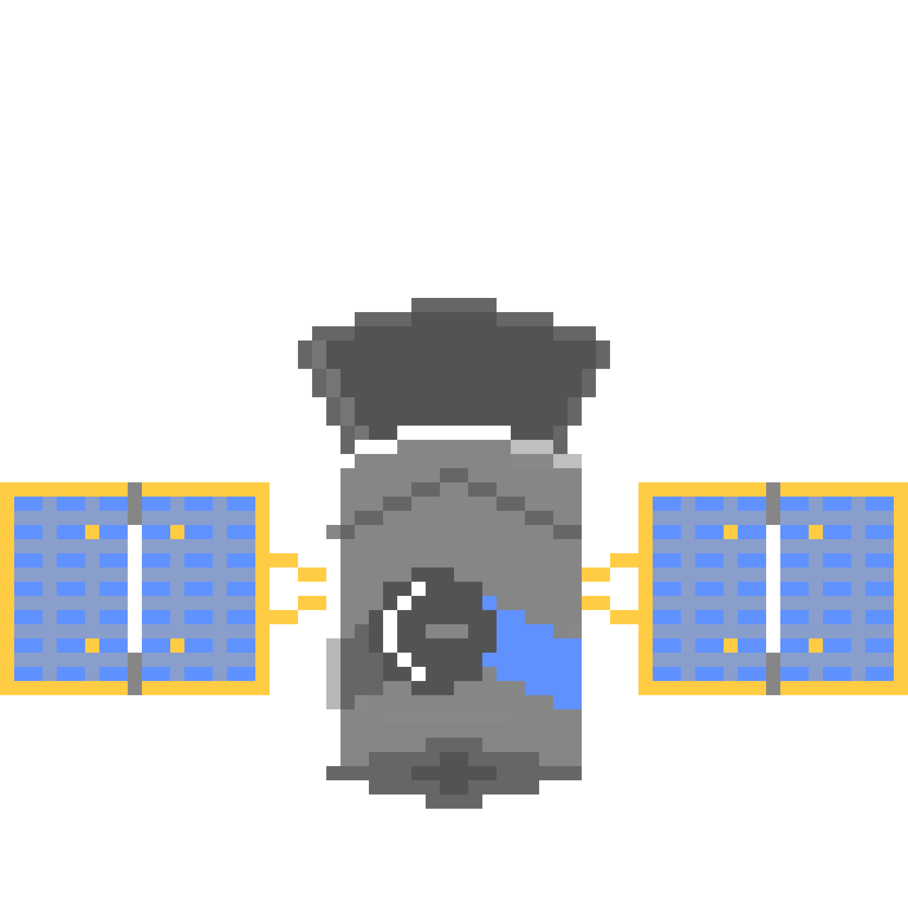

CoRot (Convection Rotation and planetary Transits)

Discovery Stats:
Exoplanets Discovered: As of June 2014, 34<
/li>
Most famous exoplanet discovered: CoRoT-7b, a exoplanet composed of metal and rock
Creator: ESA
Launch Date: December 27, 2006